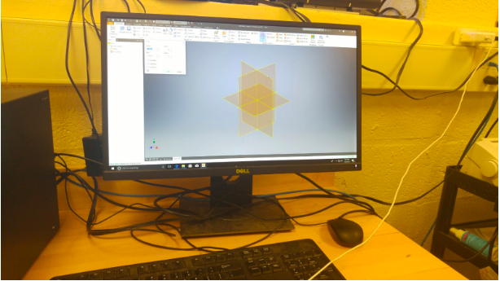
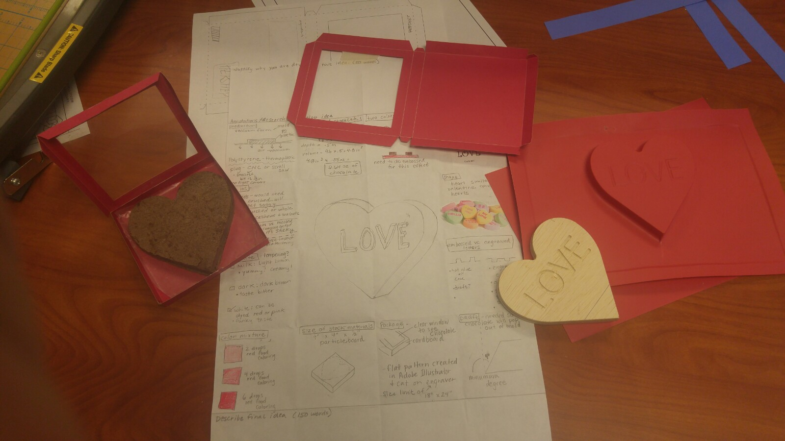

Technology Courses
Computer Programming Java (Grades 9/10)
Meets 4 periods of the 6-day cycle
.66 Credit
The course introduces the fundamentals of programming language and is designed for students who have interests in the sciences, mathematics or technologies. The course utilizes inquiry and project-based instruction to introduce and develop the topics of input and output, strings,
conditionals, loops, functions, and procedures. The primary language of the course is Java.
text
Communications Technology (Grades 9/10)
Meets 4 periods of the 6-day cycle
.66 Credit
This course provides an in-depth look into communication technologies and processes and requires students to create
and use technology effectively and to creatively communicate through a variety of avenues. The course also exposes students
to digital communications, digital photography, webpage design, video technologies, editing software, and advertising.
The course provides a hands-on introduction to many forms of software such as Photoshop, Illustrator, InDesign, C#, Java,
iMovie, Final Cut Pro, and more.
IB Computer Science Year One Higher/Standard Level (Grade 11)
Meets 6 periods of the 6-day cycle
1.0 Credit
IB Computer Science Year Two Higher/Standard Level (Grade 12)
Meets 6 periods of the 6-day cycle
1.0 Credit
IB Computer science(Years 1 & 2) involves solving problems using computers. Therefore a full understanding of logical problem solving
is required as well as detailed knowledge of how computers operate. Successful computerized systems result from a clear
understanding of the problem to be solved; appropriate use of hardware based on a detailed knowledge of its capabilities
and limitations; efficient use of algorithms and data structures; thorough and logical design; careful testing and
integration of all these components. Students of IB Computer sSience will be guided by problem-solving
strategies that will be continually reinforced in their coursework. Initial stages of the process will involve identifying
and defining the problem(s) to be solved using a computerized system. The problem will be broken down (decomposed)
into parts, with each part requiring a particular solution. From this problem definition, the student will construct
appropriate algorithms to create a solution. The emphasis should be on the use of a logical approach and analytical
thinking while using a computer to solve problems.
Technology Student Projects

Students in IB Computer Science use many different programs on the Dell computers in the computer lab. For a final project in junior year, students will create a box of chocolate, as well as the chocolate itself. They will first brainstorm a sketch and important features about the product. They research colors that appeal to the target audience and other characteristics that suits the product. They will use Autodesk Inventor CAD to design the the wooden piece of the product. Then, they will create an indent in plastic through pressured heat so that they can put the melted chocolate inside. They will also design the net for the packaging. The final product will be given to students in elementary schools to promote the STEM fields in the DASD district.

Students in 9th/10th Grade Computer Programming Java learn how to code in the Java language. They learn about variables, constants, loops, if-else statements, documentation, operations, and playgrounds in the Xcode application. They use knowledge from Geometry to create a Triangle-Solver with user interface. There are two user cases. First, if a user inputs the 3 sides of a triangle, the student must write code to find if it is a right triangle and the angles of the triangle. The other case is: If the user inputs 1 side and 2 angles, the student’s program must find the other 2 sides and angle. Students use trigonometric ratios(sin, cos, tan) and the Pythagorean Theorem to write their code.
Email mkrause@dasd.org for more information, or talk to your guidance counselor.
Copyright © 2019 https://flyingtoucans.github.io